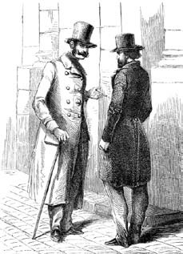
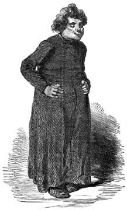

5 Nisan 1897, sabahın ilerleyen saatleri
Geç uyandım ve güncemde kısa notunuzu buldum. Erkencisiniz. Rahip Bey, Tanrı aşkına! – bu günlerin (ya da gecelerin) birinde bu satırlarımı da okuyacak mısınız bakalım. Kimsiniz siz gerçekten? Neden tam da şu anda sizi savaştan bile önce öldürdüğümü hatırlıyorum? Bir gölgeyle nasıl konuşurum ki?
Sizi öldürdüm mü? Neden eminim şimdi bundan? En baştan düşünmeye çalışalım. Ama bu arada yemeğimi de yemeliyim. İlginçtir, dün tiksinmeden yemek düşünemiyordum, şimdi ise bulduğum her şeyi yutmak istiyorum. Evden özgürce çıkabilsem bir hekime gitmeliyim.
Prag Mezarlığı'ndaki toplantıya ilişkin raporumu bitirdikten sonra Albay Dimitri ile buluşmaya hazırdım. Brafmann'ın Fransız mutfağına gösterdiği ilgiyi hatırlayarak, onu da Rocher de Cancale'a davet etmiştim ama Dimitri yemeği pek umursamaz göründü ve ısmarladıklarımı şöyle bir didiklemekle yetindi. Gözleri aşağıya eğikti, gözbebekleri minik ama bakışları deliciydi; bana nedense ağaç sansarı gözlerini düşündürdü oysa hayatımda hiç ağaç sansarı görmemiştim (ağaç sansarlarından da Yahudilerden olduğu kadar nefret ederim). Bana öyle gelmişti ki, Dimitri karşısındakinin rahatça konuşmasını engelleyen bir tavır sergiliyordu.
Raporumu dikkatle okumuş ve şöyle demişti: "Çok ilginç. Kaç para?"
Böyle insanlarla görüşmek bir zevkti ve abartılı bir meblağ atmıştım ortaya; muhbirlerimin bana ne kadar pahalıya mal olduklarını öne sürerek elli bin frank istemiştim.
"Çok pahalı" demişti Dimitri. "Ya da en azından benim için çok pahalı. Masrafları paylaşmayı deneyelim. Biz Prusya gizli servisleriyle iyi ilişkiler içindeyiz ve onların da Yahudilerle ilgili sorunları var. Ben size yirmi beş bin frangı altın olarak ödeyeyim ve size bu belgenin bir kopyasını Prusyalılara satmanız için izin vereyim; onlar da size fiyatın öteki yarısını ödesinler. Onları bilgilendirmekle ben ilgilenirim. Elbette onlar da aynen bana verdiğiniz gibi belgenin özgün kopyasını isteyeceklerdir ama dostum Lagrange'ın bana anlattığına göre sizin özgün kopyaları çoğaltmak gibi bir erdeminiz varmış. Sizinle ilişki kuracak kişinin adı Stieber'dir."
Daha fazlasını söylemedi. Konyak önerimi nezaketle reddetti, resmi bir şekilde eğildi; sonra Rus'tan çok Alman gibi başını birden dikaçıyla öne eğerek beni selamladı ve gitti. Hesabı ben ödedim.
Bana daha önce Prusya casuslarının başı Stieber'den söz etmiş olan Lagrange'la bir randevu ayarladım. "Sınır ötesi istihbarat toplamak konusunda uzmanlaşmıştı ama devletin huzurunu bozacak örgüt ve hareketlere sızmayı da biliyordu. On yıl kadar önce hem Almanları hem İngilizleri kaygılandıran Marx hakkında değerli bilgiler toplamıştı. Görünüşe göre ya o ya da ajanı Fleury takma adıyla çalışan Krause, doktor kılığında Marx'ın Londra'daki evine girmeyi başarmış ve Komünist Birlik'e bağlı olanların listesini ele geçirmişti. Bu başarılı hareket sonucunda pek çok tehlikeli kişi tutuklanmıştı" diye bitirdi sözlerini Lagrange. "Gereksiz bir önlem," demiştim: "böyle aldatıldıklarına göre bu komünistlerin hem akılları bir karış havada hem de pek deneyimsizler herhalde." Ama Lagrange, "Hiç belli olmaz" dedi. "Suçlar işlenmeden ceza verilmeli, önlem alınmalıdır."

...Lagrange'la bir randevu ayarladım.
"İyi bir istihbarat ajanı bile olup bitmiş bir olaya müdahale ettiğinde bitmiş sayılır. Bizim mesleğimiz, bunu önceden yapabilmeyi amaçlar. Bulvarlarda yaşanan kargaşalar için hiç de az para harcamıyoruz. Hapishaneden çıkmış birkaç düzine eski mahkûm ile sivil giyinmiş birkaç polis Marseillaise söyleyerek üç lokantayla iki genelevi yağmalarlar, iki kulübeyi ateşe verirler, sonra bizim üniformalılar gelir, yalandan boğuşma sonunda hepsini tutuklarlar."
"Neye yarar bu peki?"
"İyi kentsoyluları kaygı havasında tutmaya ve herkesi sağlam durmaya ikna etmeye yarar. Bastırmamız gerekenler gerçek ve kim bilir kim tarafından düzenlenen kargaşalar olsaydı işin içinden böyle kolay sıyrılamazdık. Ama biz gene Stieber'e dönelim. Prusya gizli polisinin başına geçtiğinden beri cambaz kılığında Doğu Avrupa köylerini dolaştı ve her şeyi gözlemleyerek not aldı; sonra Prusya ordusunun günün birinde Berlin'den Prag'a yürürken geçeceği yol boyunca bir istihbarat ağı oluşturdu. Sonra aynı hizmeti kaçınılmaz olarak günün birinde patlayacak savaş nedeniyle Fransa için vermeye başladı."
"Peki, bu şahısla görüşmesem daha iyi olmaz mı?"
"Hayır. Onu gözlem altında tutmalıyız. Bu nedenle onun adına çalışanların bizim ajanlarımız olması daha iyi. Öte yandan siz onu bizi hiç ilgilendirmeyen Yahudilerle ilgili öyküyle bilgilendirmelisiniz. Yani onunla işbirliği yaparak bizim hükümetimize zarar vermeyeceksiniz."
Bir hafta sonra Stieber'in imzasını taşıyan bir mektup geldi. Bana, Münih'e geçip güvendiği bir kişi olan Goedsche ile buluşmamın ve raporu teslim etmemin sıkıntı yaratıp yaratmayacağını soruyordu. Tabii ki yaratırdı ama ücretimin öteki yarısı beni daha fazla ilgilendiriyordu.
Lagrange'a Goedsche denen bu adamı tanıyıp tanımadığını sormuştum. Bana onun eski bir posta memuru olduğunu ve aslında Prusya gizli polisi için kışkırtıcı ajan olarak çalıştığını söylemişti. 1848 ayaklanmalarından sonra demokratların yöneticisini suçlamak amacıyla onun kralı öldürmek istediğini ifade eden sahte mektuplar üretmişti. Demek ki Berlin'de birkaç yargıç vardı, çünkü birileri bu mektupların sahte olduğunu kanıtlamıştı. Goedsche bu rezaletle altüst olmuş, posta memurluğu işini bırakmak zorunda kalmıştı. Bu da yetmezmiş gibi olay yüzünden gizli servisler nezdindeki güvenilirliğini yitirmişti: Bu camiada sahte belge düzenlersen seni bağışlarlar ama suçüstü yakalanırsan asla bağışlanamazsın. Sir John Retcliffe takma adıyla berbat tarihi romanlar yazarak, antisemitizm propagandası yapan Kreuzzeitung gazetesi ile işbirliği yaparak toparlanmıştı. Gizli servisler Yahudi cemaati konusunda doğru ya da yalan haberler yaymak için onu hâlâ kullanıyorlardı.
Tam bana göre bir adam diye düşünmüştüm ama Lagrange başka türlü düşünüyordu: Bu konuda karşıma çıkartılan görevli buysa demek ki Prusyalılar benim raporumla pek ilgilenmiyorlardı; pek de matah biri olmayan bu adam vicdanı rahatlatmak için notlarıma göz atacak, sonra beni aradan çıkartacaktı.
"Doğru olamaz bu, Almanlar raporumla ilgilendiler" şeklinde bir tepki vermiştim. "Öyle ki bana oldukça iyi bir meblağ vaat ettiler."
"Kim vaat etti bunu size?" diye sordu Lagrange. Dimitri olduğunu söyleyince gülümsedi: "Onlar Rus, Simonini, ne varsa söylenecek söyledim işte. Bir Rus'un Almanlar adına size vaatte bulunması neye yarar ki? Ama siz gene de Münih'e gidin, neler yaptıklarını öğrenmek bizim de işimize gelir. Ve Goedsche'nin güvenilmez bir hergele olduğunu aklınızdan hiç çıkarmayın. Zaten öyle olmasa bu mesleği yapmazdı."
Lagrange'ın bana karşı pek nazik davrandığını söyleyemem ama sefil insanlar dediğinde belki yüksek dereceli olanları da dahil ediyordu; kendi de bunlardan biriydi. Zaten paramı güzelce ödedikleri sürece alınganlık yapacak değildim.
Sanırım güncemde Bavyeralıların uzun table d'hôte'ların çevresinde dirsek dirseğe oturduğu o büyük Münih birahanesini anlatmıştım; yağlı sucuklarla kendilerini rezil ediyorlar, fıçı gibi bardaklarla biraları deviriyorlar, kadın, erkek bir arada içiyorlar, kadınlar daha neşeli, daha gürültülü ve basitler demiştim. Bunlar kesinlikle düşük ırka aitler, son derece yorucu olan yolculuktan sonra Alman topraklarında sadece iki gün geçirmek bile beni bayağı yordu.
Goedsche bana birahanede randevu verdi ve Alman casusunun bu gibi ortamlarda eşelenmek için yaratılmış olduğunu kabul etmek zorunda kaldım: Görgüsüz bir şıklık sergileyen giysileri, hayatını dalaverelerle kazanan birinin kurnaz görüntüsünü saklamıyordu.
Kötü bir Fransızcayla hemen kaynaklarım hakkında sorular sordu; lâfı çevirdim, Garibaldi anılarıma değinerek başka şeylerden söz edince keyifli bir şaşkınlık sergiledi ve 1860 İtalya olayları üzerine bir roman yazmakta olduğunu söyledi. Adını Biarritz koymaya karar verdiği yapıtı neredeyse bitmişti; birkaç cilt olacaktı ama olayların hepsi İtalya'da geçmiyordu ve Sibirya, Varşova ve hatta Biarritz'te yaşananlar dile getiriliyordu. Kitabından büyük bir iştah ve hoşnutlukla söz ederken tarihsel romanın Cappella Sistina bölümünü bitirmek üzere olduğunu söyledi. İlgilendiği farklı alanlar arasındaki bağı anlamakta zorluk çekiyordum ama görünüşe göre tarihin özü üç lanetli gücün yani masonların, Katoliklerin –özellikle Cizvitlerin– ve Yahudilerin dünyayı sinsice tehdit etmesine dayanıyordu; Yahudiler ise Alman Protestan ırkının saflığını temelden sarsmak için ilk iki tehlikenin arasına sızmaktaydı.
Mazzini yanlısı masonların İtalya'daki olayları zincirinden söz ederken tarih birdenbire masonların Rusya'ya karşı komplolar kurduğu Varşova'ya kayıyordu; masonlar burada Slav ırklarının her dönem çokça ürettiği lanetli ırk Nihilistlerle işbirliği yapıyordu; masonların da, Nihilistlerin de büyük bölümü Yahudi'ydi: bunların üye edinme sistemleri özellikle önemliydi, çünkü Bavyera İlluminatolarını ve Carbonari örgütünün Alta Vendita kuralını hatırlatıyordu: Her üye birbirini tanımayan başka dokuz kişiyi örgüte katıyordu. Sonunda Piemontelilerin İki Sicilya Krallığı'na ilerleyişleri izlenerek İtalya'ya dönülüyordu. Bu yolda yaralanmalardan doğan karışıklıklar, ihanetler, soylu kadınlara tecavüzler, farklı serüvenler yaşanıyor; cesur yürekli, kılıç kalkan kuşanmış kral yanlısı İrlandalılar, atların kuyrukları altına gizlenmiş gizli mesajlar, İrlandalı ve kral yanlısı genç bir kızı taciz eden ödlek ve Carbonari üyesi Caracciolo Prensi, birbirine dolanmış yılanlarla ve tam ortada kırmızı mercanla süslü yeşil okside altın yüzükler, III. Napolyon'un oğlunun kaçırılması girişimi, Papa yanlısı Alman birliklerinin kanıyla sulanmış Castelfidardo dramı gözler önüne seriliyor ve welsche Feigheit'a karşı atılım yapılıyordu – Goedsche bunu belki de beni gücendirmemek için Almanca söylemişti ama biraz Almanca okumuştum ve Latin ırklarının tipik ödlekliğinden söz edildiğini anlıyordum. Bu noktada durum gittikçe daha karışık bir hal almıştı ama henüz birinci cildin sonuna bile varmamıştık.
Anlattıkça Goedsche'nin domuzu andıran gözleri canlanıyor, ağzından tükürükler saçıyor, şahane olduğunu düşündüğü buluşlarına kendi kendine gülüyordu; bu arada Cialdini, Lamarmora ve öteki Piemonteli generaller ve tabii ki Garibaldi ortamı hakkında ilk elden dedikodular duymak istiyordu. Ama onun bulunduğu ortamlarda bilgilere para ödendiğinden İtalyan işleriyle ilgili ilginç bilgileri bedava aktarmayı uygun bulmadım. Hem zaten bildiklerimi kendime saklamam daha iyi olurdu.
Bu adamın yanlış bir yol izlediğini düşünüyordum: Asla bin bir yüzlü bir tehlike yaratılmamalıydı; tehlike dediğinin bir yüzü olmalıydı yoksa insanların dikkati dağılırdı. Eğer Yahudileri ihbar etmek istiyorsan Yahudilerden söz et, ama İrlandalılara, Napoli Prenslerine, Piemonteli generallere, Leh yurtseverlere ve Rus Nihilistlere dokunma. Konu nasıl bu kadar dağıtılır? Zaten roman bir yana, Yahudiler Goedsche'nin sabit fikri durumundaydı ve bu da benim işime geliyordu, çünkü ben de ona Yahudilere ilişkin değerli bir belge sunmak üzereydim.
Bu romanı aslında para ya da dünyevi şöhret kazanmak için değil Alman soyunu Yahudi tuzaklarından korumak amacıyla yazdığını söylemişti.
"Yahudilerin iliklerine kadar kötü, zehirli ve şeytani olduklarını, yüzyıllardan beri veba salgını gibi toplumun başına bela olduklarını ve böyle olmayı sürdürdüklerini söyleyen Luther'e bir kez daha kulak vermek gerekiyor. Sözlerine göre onlar zehirli yılanlar gibiydiler; kötülük yüklüydüler, hırçındılar, intikam ateşiyle yanıyorlardı, katildiler, iblisin evlatlarıydılar, bunu açıktan açığa yapamadıklarından gizli gizli sokar ve zarar verirlerdi. Onların karşısında tek mümkün tedavi bir schärfe Barmherzigkeit idi – bunu tercüme edemiyordu; çetin bir merhamet anlamına gelmesi gerektiğini anlıyordum ama aslında Luther merhamet yoksunluğundan söz ediyordu. Havraları ateşe vermek gerekiyordu; tutuşmayanlar kimsenin tek bir taşını göremeyeceği şekilde toprağa gömülmeliydi; evleri yıkılmalı, halk Çingeneler gibi ahıra kapatılmalı, yalanların, lanetlemelerin ve küfürlerin öğretildiği Talmud metinleri ellerinden alınmalı, tefecilik yapmaları yasaklanmalı, para ve mücevher olarak bütün altınlarına el konmalı, delikanlılarının ellerine balta ve kürek, genç kızlarının ellerine de mekik ve iğ verilmeliydi ki –diyordu Goedsche alaylı gülerek– Arbeit macht frei, çalışmak özgürleştirir. Luther'e göre son çözüm onların Almanya'dan kızgın köpekler gibi kovulmalarıydı."
"Luther'e kulak verilmedi" diye bitirdi sözlerini Goedsche, "en azından şimdiye dek. Ve antik dönemlerden bu yana Avrupalı olmayan halklar çirkin bulundularsa –bugün hâlâ haklı olarak hayvan kabul edilen zencilere bir bakın– üstün ırkları tanımlamak için kesin bir ölçüt henüz tanımlanmamıştı. Günümüzde insanlığın en gelişmiş düzeyinde beyaz ırkın bulunduğunu biliyoruz ve beyaz ırkın en evrimleşmiş modeli de Alman ırkıdır. Ama Yahudilerin varlığı ırkların karışması konusunda daimi bir tehdit oluşturur. Bir Yunan heykeline bakın, çizgilerdeki duruluğu, bedendeki zarafeti göreceksiniz ve bu güzelliğin erdemle özdeşleştirilmesi boşuna değildir; güzel olan aynı zamanda değerli sayılırdı aynen bizim Alman efsanelerimizin büyük kahramanları gibi. Şimdi Apollonların semitik çizgileri, esmer tenleri, karanlık bakışları, kargaburunları, çelimsiz bedenleri olduğunu düşünün. Bunlar, Homeros'un ödleklik ve çirkinliği kişileştirdiği Thersites'in özellikleriydi. Hâlâ İbrani ruhtan sıyrılamamış olan Hıristiyan efsanesi (nihayetinde Asyalı, günümüz ifadesiyle Türk bir Yahudi olan Pavlus tarafından başlatılmıştır) bizleri bütün ırkların kökünün Âdem'e dayandığı konusunda ikna etmiştir. Hayır, başlangıçtaki hayvandan ayrılırken insanlar farklı yollar seçmişlerdir. Yolların çatallandığı noktaya dönmeliyiz; halkımızın gerçek ulusal kökenlerini bulmalıyız; Fransız lumières'in kozmopolitanlık ve égalité ve evrensel kardeşlik martavallarına kulak asmamalıyız. Bunlar yeni zamanların ruhudur. Artık Avrupa'da Risorgimento adı verilen birlik hareketi, halkın özgün ırkının saflığına yaptığı çağrıdan başka bir şey değildir. Sadece bu terim –ve amaç– sadece Alman ırkı için geçerlidir ve İtalya'da bir zamanların güzelliğine dönüşün, şu yay bacaklı Garibaldi'nizle, şu kısa bacaklı kralınızla ve şu cüce Cavour ile temsil edilmesi insanı güldürüyor. Çünkü Romalılar da semitik ırktandı."
"Romalılar mı?"
"Vergilus'u okumadınız mı? Romalılar bir Troyalıdan yani Asyalı bir ırktan türemişlerdir ve bu semitik göç kadim İtalyan halkını mahvetti; Keltlere ne olduğunu da görüyorsunuz: Romalılaştırıldılar, Fransız oldular, sonuç olarak onlar da Latin oldu. Yalnızca Almanlar saflıklarını ve bozulmamışlıklarını korumayı ve Roma'nın gücünü yıkmayı başardılar. Ana fikir olarak, Ari ırkın üstünlüğü, Yahudi ve kaçınılmaz olarak Latin ırkının düşüklüğü farklı sanat dallarındaki mükemmellikten de anlaşılır. Ne İtalya'da ne Fransa'da bir Bach, bir Mozart, bir Beethoven, bir Wagner yetişmiştir."
Goedsche yücelttiği Ari ırkının bir kahramanı gibi görünmüyordu, hatta gerçeği söylemem gerekirse (iyi ama neden hep gerçeği söylemek gerekir?) obur ve şehvet düşkünü bir Yahudi'ye benziyordu. Ama nihayetinde buna inanmak zorundaydı, çünkü geri kalan yirmi beş bin frangı bana ödemek için çalıştırıyorlardı onu.
Gene de ufak bir fesatlık etmeden duramadım. Kendini üstün ırkın iyi bir temsilcisi, kusursuz bir insan olarak hissedip hissetmediğini sordum. Bana şöyle bir yan baktı ve bir ırka ait olmanın yalnızca fiziksel değil ruhsal bir olay da olduğunu söyledi. "Bir Yahudi, bebeklerin altı parmakla doğması, kadınların çarpma işlemi yapabilmesi gibi doğal bir hata sonucu sarışın ve mavi gözlü doğsa bile her zaman Yahudi'dir. Ve bir Ari, saçları kara bile olsa, halkının ruhunu paylaşırsa Aridir."
Ne var ki sorum şevkini kırmıştı. Şöyle bir toparlanmış, kırmızı kareli bir mendille alnındaki teri silmiş, buluşma nedenimiz olan belgeyi sormuştu. Verdim ve bütün bu konuşmalarından sonra heyecanlanacağını sandım. Eğer hükümeti Luther'in emriyle Yahudilerden kurtulmaya karar verdiyse, Prag Mezarlığı öyküm bütün Prusya'yı Yahudi komplosunun doğası konusunda alarma geçirmek için yazılmış gibiydi. Oysa o, belgeyi yavaş yavaş, birasını yudumlaya yudumlaya, alnını kırıştıra kırıştıra, gözlerini bir Moğol gibi kısa kısa okudu ve sonunda şöyle dedi: "Bu haberler bizi cidden ilgilendirir mi bilmem. Yahudi konusunda hep bildiğimiz şeylerden söz ediliyor burada. Tamam, iyi diyorlar, uydurulduysa da iyi uydurulmuş."
"Rica ederim Herr Goedsche, buraya kadar size uydurma bir belge satmaya gelmedim!"
"Elbette böyle bir şeyden kuşkulanmıyorum ama benim de bana para ödeyenlere karşı sorumluluklarım var. Belgenin özgünlüğünü bir kez daha denetlemek gerekiyor. Bu kâğıtları Herr Stieber ve onun ofisine sunacağım. Bana bırakın ve isterseniz Paris'e dönün; birkaç hafta sonra yanıt alacaksınız."
"Ama Albay Dimitri bana her şeyin tamam olduğunu söylemişti..."
"Hayır, öyle değil. Henüz değil. Söyledim size, bana belgeyi bırakın."
"Size karşı dürüst olacağım Herr Goedsche. Elinizde tuttuğunuz, özgün bir belgedir: Özgün, anladınız mı? Değeri elbette verdiği haberden ama daha da fazlası bu haberlerin özgün bir metinde, söz edilen toplantıdan sonra Prag'da yazılmış olmasından kaynaklanır. Bu belgenin en azından bana vaat edilen parasını almadan başka ellerde dolaşmasına izin veremem."
"Fazlasıyla kuşkucusunuz. Peki o halde, bir ya da iki bira daha ısmarlayın ve bana bu metni kopya etmem için bir saatlik süre tanıyın. İçindeki haberlerin değer taşıdığını kendiniz söylediniz ve sizi kandırmak istesem, ben bunları ezberleyebilirim de, çünkü okuduğum her şeyi kelime kelime hatırlayabildiğim konusunda sizi temin ederim. Ama metni Herr Stieber'e sunmak istiyorum. Bu nedenle bırakın, kopya edeyim. Özgün metin bu mekâna sizinle girdi, sizinle çıkacaktır."
Karşı çıkmak için mazeretim yoktu. İğrenç Alman sosisleriyle damağıma eziyet ettim, bol bol bira içtim; Alman birasının arada sırada Fransız birası kadar leziz olduğunu söylemeliyim. Goedsche'nin dikkatle bütün metni kopyalamasını bekledim.
Soğuk bir havayla ayrıldık. Goedsche hesabı bölüşmemiz gerektiğini belirtti, hatta benim ondan birkaç bira daha fazla içtiğimi hesap etti. Önümüzdeki haftalarda haber alacağımı vaat ederek, beni boşu boşuna ve masrafları cebimden ödeyerek yaptığım bu uzun yolculuk yüzünden öfkeden köpürmüş durumda bırakıp gitti: Dimitri ile anlaştığımız paranın beş kuruşunu bile görmemiştim.
Ne aptalım, diye düşündüm, Dimitri, Stieber'in asla para ödemeyeceğini biliyordu ve beni kandırarak yarı paraya belgeme el koymuştu. Lagrange haklıydı, bir Rus'a asla güvenmemeliydim. Belki fazla para istemiştim ve yarısını bile olsa kazanmış olmaktan memnun olmalıydım.
Almanların bir daha piyasaya çıkmayacaklarını kesin olarak anlamıştım ve nitekim hiçbir haber almadan birkaç ay geçti. Öfkemi dile getirdiğim Lagrange hoşgörüyle gülümsedi: "Mesleğimiz konusunda kuşkulular; biz de ermişlerle çalışmıyoruz elbette."
Olay hoşuma gitmiyordu. Prag Mezarlığı öyküm Sibirya topraklarında heba edilmeyecek kadar iyi kurgulanmıştı. Bunu Cizvitlere satabilirdim. Nitekim Yahudiler konusundaki ilk gerçek suçlamalar ve onların uluslararası komplolarına ilişkin ilk imalar Barruel gibi bir Cizvit'ten gelmişti ve dedemin mektubu tarikatın başka isimlerinin dikkatini çekmiş olmalıydı.
Cizvitlere ulaşmam için bana aracılık yapabilecek tek kişi Rahip Dalla Piccola olabilirdi. Onunla beni temasa sokan Lagrange olmuştu; ben de ona başvurdum. Lagrange ona ulaşmak istediğimi kendisine bildireceğini söyledi. Ve gerçekten de kısa bir süre sonra Dalla Piccola dükkânıma geldi. Ticaret dünyasının terimiyle ona malımı gösterdim ve ilgilenmiş gibi göründü.
"Dernek'ten birilerine söz etmeden önce belgenizi inceleyeceğim; onlar kapalı kutuda mal almazlar. Umarım bana güvenir ve belgenin birkaç gün bende kalmasına izin verirsiniz. Merak etmeyin, benim elimden çıkmayacaktır."
Böyle bir din adamına itimat ettim.
Aradan bir hafta geçtikten sonra Dalla Piccola yeniden dükkânıma geldi. Onu bu kez çalışma odama çıkarttım, içecek bir şeyler sunmaya çalıştıysam da pek dostane bir havası yoktu.
"Simonini" dedi bana, "siz beni kesinlikle aptal yerine koydunuz ve İsa Derneği üyeleri karşısında kalpazan durumuna düşürecek, yıllar içersinde dokuduğum güzel ilişkiler ağını mahvedecektiniz."

"Simonini" dedi bana, "siz beni kesinlikle aptal yerine koydunuz..."
"Rahip Bey, neden söz ettiğinizi anlamıyorum..."
"Benimle alay etmeyi kesin lütfen. Bu belgeyi verdiniz, gizli kalmasını istediniz (bunu söylerken Prag Mezarlığı raporumu masanın üzerine fırlattı) ve ben son derece yüksek bir fiyat istemek üzereyken Cizvitler bana budala gözüyle bakarak, nazik bir dille bu sözde çok gizli belgenin metninin John Retcliffe adında birinin Biarritz adlı romanında kurgu olarak yer aldığını bildirdiler. Kelimesi kelimesine tıpatıp iki metin (şimdi de masaya bir kitap attı). Herhalde Almanca biliyorsunuz ve henüz çıkmış bu romanı okudunuz. Prag Mezarlığı'ndaki o gece toplantısının öyküsünü buldunuz, hoşunuza gitti, böyle bir kurguyu gerçekmiş gibi kaleme alıp satmak hevesine kapıldınız. Ve aşırmacılara özgü o yüzsüzlükle Ren Nehri'nin bu yakasında kimsenin Almanca okumayacağına güvendiniz..."
"Dinleyin, sanırım anlıyorum..."
"Anlayacak bir şey yok. Bu kâğıt parçalarını çöpe atabilir, sizi de cehennemin dibine gönderebilirdim ama inatçıyımdır ve intikam almaktan gocunmam. Gizli servisteki dostlarınıza hamurunuzun hangi mayadan yoğrulduğunu bildireceğim ve aktardığınız bilgilere ne kadar güvenmeleri gerektiği konusunda uyaracağım onları. Peki, neden gelip bunları söyledim size? Dürüstlüğümden değil –sizin gibi bir düzenbaza böyle bir dürüstlük borçlu değilim–, çünkü eğer gizli servisler sırtınıza bir hançer saplanmasını uygun göreceklerse bunun neden gerektiğini bilin istedim. Maktul onu katledenin kim olduğunu bilmeyecekse birini katletmenin manası yoktur, öyle değil mi?"
Her şey ayan beyan ortadaydı; Goedsche denen o haydut (Lagrange onun Retcliffe takma adıyla feuilletons yayımladığını söylemişti zaten) benim belgemi Stieber'e hiç göstermemişti: Metnimin, bitirmek üzere olduğu ve Yahudilere öfkesini kustuğu son romanına mükemmel biçimde uyacağını kestirmiş, bu gerçek öyküyü sahiplenmiş (en azından gerçek olduğunu sanmıştı) ve bunu –ona ait– bir romanın parçası haline getirmişti. Lagrange bu hergelenin sahte belge hazırladığı konusunda beni uyarmıştı ve şimdi benim gibi bir kalpazanın onun tuzağına düşüyor olması beni çıldırtmıştı.
Öfke duyguma bir de korku ekleniyordu. Dalla Piccola sırta saplanacak hançerden söz ederken belki teşbih yaptığını sanıyordu ama Lagrange açık açık konuşmuştu: Gizli servis dünyasında mimlenen kişi ortadan kaldırılırdı. Gizli ihbarda bulunuyorum diye roman artığını satmaya kalkışan ve kesinlikle güvenilmez yaftası takılan bir kişi buna ek olarak bir de İsa Derneği'ne de hizmet vermeye kalkışmak gibi bir gülünç duruma düşerse kim onu hâlâ el altında tutardı? Bir bıçak saplandığı gibi Sen Nehri'ne atılır, olur biterdi.
Rahip Dalla Piccola'nın bana vaat ettiği buydu; ona gerçeği anlatmaya çalışmam hiçbir işe yaramadı, çünkü inanması için bir neden yoktu; bu belgeyi Goedsche'ye romanını yazmayı bitirmesinden önce verdiğimi bilmiyordu; ona (yani Dalla Piccola'ya) Goedsche'nin kitabı piyasaya çıktıktan sonra verdiğimi sanıyordu.
Çıkmaz bir sokağa düşmüştüm.
Tek çarem Dalla Piccola'nın konuşmasını engellemekti.
Neredeyse içgüdüsel bir davranış oldu. Masamın üzerinde son derece ağır, dövme demirden bir şamdan vardır; bunu elime aldığım gibi Dalla Piccola'yı duvara doğru ittim. Gözlerini fal taşı gibi açtı ve tek solukta şöyle dedi: "Beni öldürmeyeceksiniz değil mi..."
"Üzgünüm ama evet" dedim.
Ve gerçekten de üzgündüm ama buna mecburdum. Darbeyi indirdim. Dişlek ağzından kan gelen rahip yere yığıldı. Cesede baktım ve en ufak bir suçluluk duygusu bile duymadım. Kendi istemişti.
Tek sorun bu can sıkıcı cesedi ortadan kaldırmaktı.
Dükkânımı ve üst kattaki bu daireyi satın aldığımda, mülk sahibi bana mahzene açılan bir kapak göstermişti.
"Birkaç basamak göreceksiniz, iğrenç kokudan bayılacağınızı sanarak inmeye cesaret edemeyeceksiniz başlangıçta. Ama gün gelir gerekebilir. Yabancısınız ve belki de bütün hikâyeyi bilmiyor olabilirsiniz. Eskiden atıklar sokağa atılırdı, hatta gelip geçeni kişisel pisliğimiz konusunda uyarmak için 'Suya dikkat!' diye bağırılması gerektiği konusunda bir yasa bile çıkartılmıştı ama bu çok zahmetli bir işti; bu nedenle oturaklar pencereden olduğu gibi dökülüyor, kaldırımda yürüyen rezil oluyordu. Sonra oturakların boşaltılması için sokaklara açık kanallar yapıldı; gün gelip üzerleri örtülünce lağım sistemi doğmuş oldu. Şimdi Baron Haussmann nihayet Paris'e ciddi bir kanalizasyon sistemi kurdu ama bu daha çok kirli suyun akması için kullanılıyor ve sandalyenizin altındaki kanal tıkanmazsa insani dışkılar büyük çöplüklere atılmak üzere geceleri toplanacakları bir çukura atılıyorlar. Şimdi tout-à-l'égout sistemini kesinlikle benimsemenin önemi tartışılıyor; böyle olunca büyük lağımlara sadece pis sular değil, bütün atıklar atılabilecek. İşte bu nedenle on yıldan bu yana, yasalar ev sahiplerine evlerini en az bir metre otuz santim genişliğinde bir boruyla genel lağıma bağlama zorunluluğu getirdi. İşte aşağıda olan budur ama benim döşediğim boru yasanın buyurduğu genişlikte ve yükseklikte değildir; bu biraz zor olacaktı. Bunlar büyük bulvarlarda yapılan işler; bizimki gibi bir çıkmaz sokak kimsenin umurunda değildir. Pisliğinizi gereken yere indiriyor musunuz diye kontrol etmeye kimse gelmeyecektir, merak etmeyin. Bezdiğiniz zaman yağmurlu günlerde suyun buralara kadar gelip sizinkini de önüne katıp sürüklemesini umarak pisliğinizi bu merdivenlerden aşağı atarsınız. Öte yandan lağıma bağlantının iyi tarafları da vardır. Öyle bir devirde yaşıyoruz ki, Paris'te her on ya da yirmi yılda bir ya devrim yapılıyor, ya bir ayaklanma yaşanıyor; bu nedenle yeraltında bir kaçış yolu olması işe yarayabilir. Her Parisli gibi siz de yakınlarda yayımlanan Sefiller romanını okumuşsunuzdur; kahraman orada yaralı arkadaşını sırtına alarak kanalizasyondan kaçtığında ne demek istediğimi anlamışsınızdır."
İyi bir feuilletons okuru olarak Hugo'nun bu romanını iyi biliyordum. Elbette böyle bir deneyim yaşamak istemezdim; öte yandan onun kahramanının yeraltında onca yolu nasıl aştığını da anlamış değildim. Belki Paris'in başka bölgelerinde yeraltı kanalları yeterince yüksek ve geniş olabilirdi ama Maubert Çıkmazı'nın altından geçen kanal bir önceki yüzyıldan kalmış olmalıydı. Dalla Piccola'nın cesedini önce dükkâna, sonra mahzene indirmek kolay görünmüyordu ama cücemsi adam yeterince iki büklüm durduğundan ve sıska olduğundan taşımak sandığım kadar zor olmadı. Mahzene indirmek için basamaklardan aşağı yuvarlamak zorunda kaldım. Sonra ben de indim ve iki büklüm durarak tam evimin altında çürümesin diye birkaç metre sürükledim. Tek elimle ayak bileğinden çekiyor, öteki elimle kandili taşıyordum – ne yazık ki burnumu tıkamak için üçüncü bir elim yoktu.
İlk kez, öldürdüğüm bir kişinin cesedini ortadan kaldırmak zorunda kalıyordum, çünkü Nievo ve Ninuzzo olaylarında benim zahmet etmeme gerek kalmadan durum çözümlenmişti (ama Ninuzzo olayında, en azından Sicilya'daki ilk sefer iş başa düşmüştü). Şimdi anlıyordum ki cinayet işlemenin en rahatsız edici tarafı cesedin yok edilmesiymiş; rahiplerin insan öldürmeyi men etmelerinin nedeni bu olsa gerek; tabii savaşta böyle bir sorun yok, çünkü orada cesetler akbabalara bırakılıyor.
Maktulüm rahibi on metre kadar sürükledim; bir din adamını sadece bana değil, benden önce kim bilir kime ait olan dışkılar arasında çekmek berbat bir işti; hele ki bunu bizzat kurbanıma anlatmak zorunda kalmam daha da kötüydü – Tanrım, neler yazıyorum ben? Ama sonunda fazla sayıda insan pisliğini ezdikten sonra uzaktan bir ışık huzmesi görür gibi olunca Maubert Çıkmazı'nın sonunda bir rögar kapağı olduğunu anladım.
Her ne kadar başlangıçta cesedi gür suyun merhametine bırakmak için daha büyük bir kolektöre kadar taşımayı tasarlamış olsam da sonradan, bedeni Sen Nehri dahil nereye atarsam atayım bulan birinin cesedi teşhis edebileceğini idrak ettim. Doğru düşünmüşüm, çünkü şimdi yazarken Clichy Vadisi'nin büyük çöplüğünde son altı ayda dört bin köpek, beş dana, yirmi koyun, yedi keçi, yedi koyun, seksen kümes hayvanı, altmış dokuz kedi, dokuz yüz elli tavşan, bir maymun ve bir boa yılanı bulunduğunu öğrenmiş bulunuyorum. İstatistik rahiplerden söz etmiyor ama durumu daha da olağanüstü kılmak konusunda katkıda bulunabilirmişim. Oysa ben maktulümü oraya bırakırken kımıldamaması konusunda umutlarım vardı. Duvarla gerçek ve ciddi kanal arasında –ki kesinlikle Baron Haussmann'dan çok daha eskiydi– daracık bir kaldırım vardı ve ben cesedi oraya bıraktım. O mikroplu hava ve nem yüzünden olabildiğince hızlı çürüyeceğini umuyordum; geriye kalan kemiklerden kimse kimliğini saptayamazdı. Sonra çıkmaz sokağın gerçeğini bildiğim için onarım için buraya görevlilerin asla uğramayacağını tahmin ediyordum. Hatta orada insan kalıntıları bulunsa bile nereden geldiğinin kanıtlanması gerekirdi: rögar kapağından inen herkes bırakmış olabilirdi onları.
Çalışma odama döndüm ve Goedsche'nin kitabını aldım elime; Dalla Piccola malum bölüme bir ayraç koymuştu. Almancam biraz paslanmıştı ama ayrıntıları değilse bile olayları anlayabiliyordum. Evet, bu kesinlikle benim Prag Mezarlığı'ndaki hahamın konuşmasıydı; biraz daha teatral bir kalemi olan Goedsche mezarlığın gece görüntüsüne ilişkin daha zengin bir tanımlama yapmıştı: Rosenberg adında bir banker yanında tepesine siyah bir şapka kondurmuş, lüle saçları şakaklarından dökülen bir haham ile mezarlığa geliyordu ve içeriye girmek için bekçiye yedi heceden oluşan Kabalistik bir sözcük fısıldıyordu.
Sonra, benim metnimde Lasali diye biri tarafından içeri alınmış olan muhbirim geliyor; ona yüz yılda bir gerçekleşebilecek bir buluşmaya tanık olmayı vaat ediyordu. İkisi de takma sakal ve saçla, geniş kenarlı şapkalar takıyorlardı; olaylar aşağı yukarı benim anlattığım şekilde gelişiyordu ve mezardan yükselen mavi ışık ve gecenin yuttuğu hahamların uzaklaşması tasvirleriyle final aynen benim yazdığım gibiydi.
Utanmaz yazar benim özlü raporumu kullanarak melodramatik sahneler yaratmıştı. Birkaç kuruş kazanmak için her şeye hazırdı. Artık din diye bir şey kalmamış.
Yahudilerin istediği de buydu işte.
Şimdi yatmaya gidiyorum, ılımlı gastronom alışkanlığımı bıraktım, şarap içmedim ama ölçüyü kaçırarak Calvados tükettim (ve ölçüyü kaçırmış biçimde başım dönüyor – sanırım tekrarlamış oluyorum bunu). Yalnızca rüyasız ve derin bir uykuya daldığımda Rahip Dalla Piccola olarak uyandığıma göre, şimdi katlinin kuşkusuz nedeni ve tanığı olduğum bir maktulün kimliğinde nasıl uyanacağımı merak ettiğim için böyle içtim.